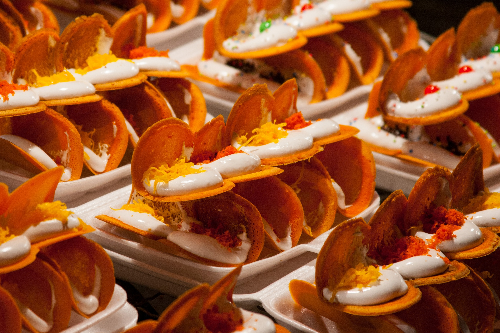

DESSERT
THE SWEET FOOD THAT CONCLUDE THE MEAL
.jpg)
KHAW NIAO THU LIEN
(DURIAN WITH STICKY RICE)
A classic Thai dessert recipe
especially for durian lovers! A sweet coconut-durian "broth" is poured over chewy sticky rice...
this is such a comforting, heart-warming dessert that is super easy, this recipe will be a breeze!
INGREDIENTS
| Ingredients for Sticky Rice | Ingredients for Coconut Cream with Durian |
|
1.5L water 500g Thai glutinous rice 400ml coconut cream 250g sugar 1 tsp salt |
500ml coconut cream 200g palm sugar 300g durian (fresh if available 1 tsp salt |
INSTRUCTION :
TO PREP THAI GLUTINOUS RICE
2. Prepare the coconut cream mixture by combining the coconut cream, sugar and salt into saucepan.
3. On medium heat, stir the coconut mixture to dissolve the sugar without bringing it to boil. Turn off the heat and set aside.
4. After 3 hrs, drain off excess water from glutinous rice. Steam the rice for 15 mins. Half way through steaming, you may open the steamer to turn the rice once.
5. Put the cooked glutinous rice into a large mixing bowl, add the coconut cream mixture and stir to mix well. Cover the bowl with a tea towel, after 5 mins stir the rice mixture once more and cover again with tea towel then set aside.
TO PREP THE COCONUT CREAM WITH DURIAN
2. Turn on the heat and bring coconut mixture to simmer till sugar dissolved. Remove from heat. Set aside till cooled down to room temperature.
3. Add fresh durian into coconut mixture. Break durian flesh into chunk piece. Ready to serve.
SERVING :
2. Serve immediately.

BUA LOY
(GLUTINOUS RICE BALLS IN COCONUT MILK)
Bua Loy, translating to “floating lotus”, is a dessert as beautiful as it is named.
Bright orange and green orbs intermingling and floating in a sea of white coconut milk,
it is a traditional Thai soupy dessert that is fragrant and will satisfy any sweet tooth.
INGREDIENTS
| Ingredients for SWEET POTATO BUA LOY | Ingredients for PANDAN BUA LOY | Ingredients for COCONUT SOUP |
50 grams (about ½ cup roughly diced) sweet potato, steamed 55 grams (½ cup) sticky rice flour Water |
70 grams (½ cup + 2 tablespoons) sticky rice flour ¼ cup pandan water (plus extra, if needed) |
250 millilitres (1 cup) coconut milk 2 tablespoons white sugar 1 tablespoon palm sugar ¼ teaspoon salt 1 pandan leaf, knotted |
INSTRUCTION
Knead until combined into a sandy textured dough. Add water, 1 teaspoon at a time, until the dough comes together with a sheen.
This is typically 5-6 teaspoons. Roll into small marble sized balls.
2. Prepare the pandan bua loy as above by mixing the pandan water with the sticky rice flour.
Add more flour if the dough is too thin, or more pandan water if too thick.
Roll the dough into marble sized balls.
3. Make the coconut milk soup by adding the coconut milk, both kinds of sugar, salt, and knotted pandan leaf to a small saucepan
and simmer for a few minutes. Do not boil. Discard pandan leaf.
4. Bring a pot of water to the boil and tip in all of the dumplings.
Boil for 30 seconds to a minute, or until all of the balls are floating.
Strain with a spider or mesh strainer and divvy up amongst some bowls. Pour the warm sweetened coconut milk over and serve.

KHANOM BUEANG
Khanom Buang (ขนมเบื้อง) or Thai Crispy Pancake / Thai Crepe is a traditional Thai Dessert in the central part of Thailand
1. Place 1 egg shell in a mortar and pestle and crush for a couple of minutes until the shell is broken into a powder.
Then pour in 125 ml of water, mix with the crushed egg shell, and set aside.
2. Now add 3 egg whites and 1/2 cup of sugar to a jug or bowl
and whisk for about 5 to 10 minutes until you are left with a thick cream.
3. Next we need to make the crepe batter.
By now the egg shell powder we made earlier should have settled at the bottom of the mortar and pestle.
We just want to spoon out the water only into a mixing bowl, and then add 50g mung bean flour, 100g of rice flour, 1 egg, 150g of sugar, and 1/2 tbsp of coco powder
to the bowl and whisk together until there are no lumps in the mixture.
4. Now heat a non stick pan on a medium-low heat, and when hot, pour a small amount of batter onto the pan, and spread it out in a circular motion,
so that you have a very thin layer of batter.
Let the crepe cook for about 20 seconds or so, then spoon on some of the whipped cream we made,
along with some of the golden egg yolk threads.
When the crepe is crispy and light brown, which shouldn’t take more than a couple of minutes of cooking to achieve,
carefully fold the crepe in half and remove from the pan. Repeat this process until all of your batter has been used up.
KHANOM BUEANG
THAI CREPES
Khanom Buang (ขนมเบื้อง) or Thai Crispy Pancake / Thai Crepe is a traditional Thai Dessert in the central part of Thailand
INGREDIENTS
| TOPPINGS |
100G rice flour 50g mung bean flour 150g sugar 150g sugar 1 egg 1 egg shell 1/2 tbsp coco powder 3 egg whites 1/2 cup sugar 1/2 cup foi thong (golden egg yolk threads) |
INSTRUCTION :
Then pour in 125 ml of water, mix with the crushed egg shell, and set aside.
2. Now add 3 egg whites and 1/2 cup of sugar to a jug or bowl
and whisk for about 5 to 10 minutes until you are left with a thick cream.
3. Next we need to make the crepe batter.
By now the egg shell powder we made earlier should have settled at the bottom of the mortar and pestle.
We just want to spoon out the water only into a mixing bowl, and then add 50g mung bean flour, 100g of rice flour, 1 egg, 150g of sugar, and 1/2 tbsp of coco powder
to the bowl and whisk together until there are no lumps in the mixture.
4. Now heat a non stick pan on a medium-low heat, and when hot, pour a small amount of batter onto the pan, and spread it out in a circular motion,
so that you have a very thin layer of batter.
Let the crepe cook for about 20 seconds or so, then spoon on some of the whipped cream we made,
along with some of the golden egg yolk threads.
When the crepe is crispy and light brown, which shouldn’t take more than a couple of minutes of cooking to achieve,
carefully fold the crepe in half and remove from the pan. Repeat this process until all of your batter has been used up.